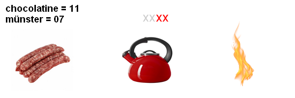
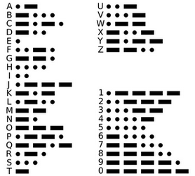

Une porte fermée... à table !
Ça y est, c'est la finale ! Vous et votre équipe êtes en train de programmer une superbe IA capable de défoncer toutes les autres INSAs. Cependant, à trop réfléchir, la fatigue et la faim commencent à se faire sentir. Heureusement, l'équipe organisatrice a pensé à tout et vient de vous envoyer un message disant que le repas est servi !
Vous vous apprêtez à sortir de votre salle... Quand, étrangement, la porte ne s'ouvre pas ! Vous entendez des voix... Oh non ! C'est encore un coup de CVL !
Une table coince l'ouverture de votre porte et aucun moyen de sortir de là... ou presque.
Ces tactitiens affirment que si vous faites preuve de tactique en trouvant leur mot de passe, ils vous ouvriront. En attendant, ils vont chercher le dessert !
Faites vite ! Vous n'avez que 45 min avant qu'il n'y ait plus rien à manger !
Porte tactique
Une porte bien gardée par nos amis de CVL....
Etes-vous digne de tactique ?
Nombres d'essais restants : {{door.essais}} / 3
Attention ! En cas d'erreur, nos amis de CVL iront manger une de vos parts... et reviendront vous voir dans 10 min...
BRAVO ! Vous avez montré que vous êtes un bon tactitien ! Maintenant, direction la salle à manger !
Vous avez fini cet escape game en : {{timer}}
La suite de l'aventure arrive bientôt...
Dormir, c'est tricher !
Votre installation pour éventuellement dormir comme un sac...
Tiens ? Quelqu'un a fait tombé une clé USB
Mais, que contient cette clé ?
Computer A
L'ordinateur est verrouillé...
Mot de passe
Nombres d'essais restants : {{computerA.essais}} / 3
Attention ! Un mot de passe erroné verrouillera l'ordinateur pendant 5 min...
L'ordinateur est déverrouillé !

Désolé, cette clé n'est pas compatible avec cet ordinateur...
Computer B
L'ordinateur est verrouillé... Hum ? Que fais cette craie bleue ici ?
Mot de passe
Nombres d'essais restants : {{computerB.essais}} / 3
Attention ! Un mot de passe erroné verrouillera l'ordinateur pendant 5 min...
L'ordinateur est déverrouillé !
Oh ! Un grand bruit sonore vient de retentir !

Toulouse
Ce chat est un ami à Pablo et parle :
"Vous savez... C'est pas la première fois qu'on m'enferme... En 2019, ils m'ont aussi fait le coup..."
Rouen
Ce chat est sensible aux explosions... :
"Eh ! Eh ! J'ai une hisoire à vous raconter. En 2014, les orgas ont voulu cuire des saucisses... Sauf qu'ils n'avaient rien pour le faire... Eh, du coup, ils les ont cuites avec une bouilloire."